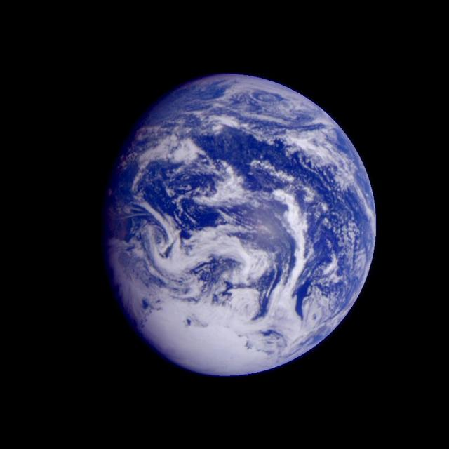
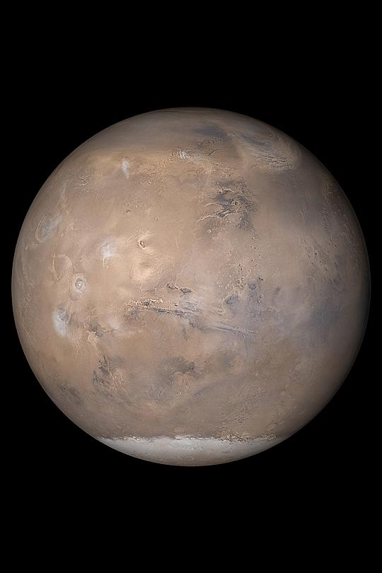
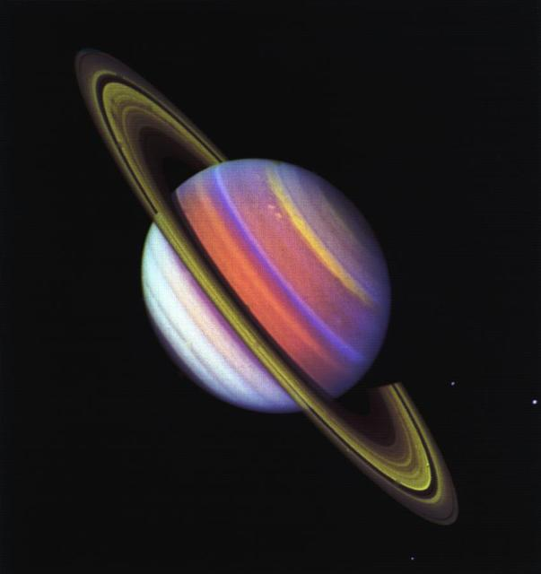

Earth
Earth is our home and the only planet known to support life.
Discover the wonders of our solar system
Our solar system contains eight planets, fascinating moons, and countless objects orbiting the Sun. Space exploration helps us understand our planet and the universe around us.
Every planet has unique features and characteristics.

Earth is our home and the only planet known to support life.

Mars is known as the Red Planet because of iron oxide on its surface.

Saturn is a gas giant famous for its remarkable ring system.
Space missions have expanded our knowledge of the universe.
Here are three amazing facts about our solar system: